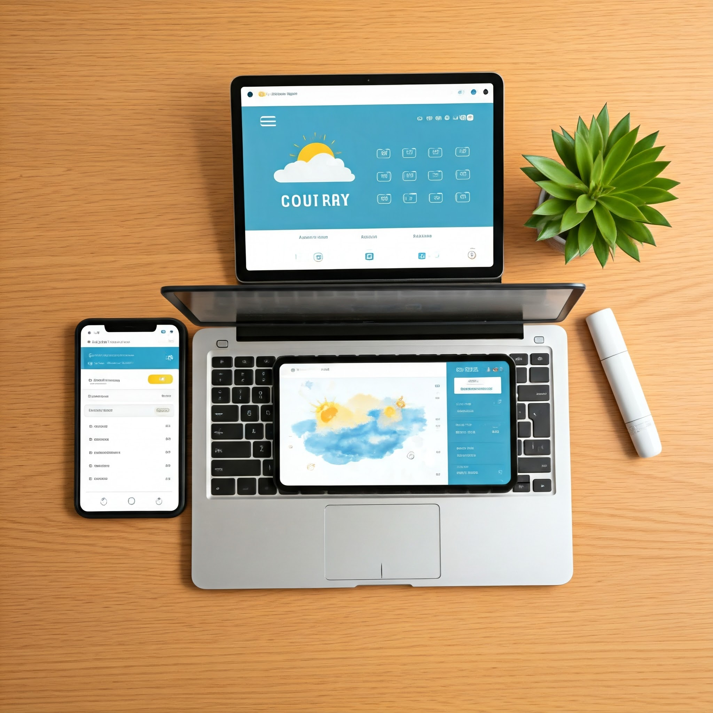

Project 1
The image shows a flat lay of devices with screens displaying weather and e-commerce elements. It suggests a potential connection between weather information and online shopping.

Project 2
The image shows a computer screen and a phone displaying a blog post about fitness tracking. The blog post includes statistics and data visualizations

Project 3
A flat lay of a modern workspace with a laptop, smartphone, and tablet. Each device displays different content related to e-commerce and weather, suggesting a potential integration of these two areas.